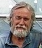

Editorial
This Seventh Chimaera features the work of the distinguished Australian poet and novelist Alan Gould, with an interview, and contributions by Ann Drysdale, Les Murray, Geoff Page, Alan Wearne, Janet Kenny, and Stephen McInerny. Consonant with one of Alan Gould’s major subjects, The Chimaera’s theme for this issue is ‘Quests and Voyages’, which will of course transport readers to some very unexpected places. The section for Unthemed poetry and prose is also well stocked: The Chimaera, as always, strives to present a rich hoard of literary treasures and delights.
After this seventh issue, The Chimaera will slink back to its gem-strewn lair and hibernate for a space, arising again perhaps in 2011, when the Seven Sleepers awake in preparation for the End of Days in 2012. Meanwhile, though, we thank our many skilful writers who have contributed such amazing and fine work; and our many readers, too, who have chased this elusive fabulous Beast across wild and legendary literary landscapes. Io, Chimaera!
Yet som men say in many partys of Inglonde that The Chymaera ys nat dede, but had by the wyll of oure Lorde Jesu into another place; and men say that it shall com agayne...
Editor: Paul Stevens
Co-editor: Peter Bloxsom
Artist/Photographer: Patricia Wallace Jones
Paul Stevens was born in Yorkshire, but lives in Australia where he teaches Literature. He has published poetry and prose widely in pixel and print. He also edits The Flea metaphysicalzine.
Peter Bloxsom is a freelance writer and web developer. His articles, fiction, reviews, essays, humour, poems and other writings have appeared in print and online. He edits 14 by 14, the lean sonnet zine.
Patricia Wallace Jones is an artist, poet, and retired disability advocate. More of her artwork can be seen at: http://imagineii.typepad.com/imagineii/.
|